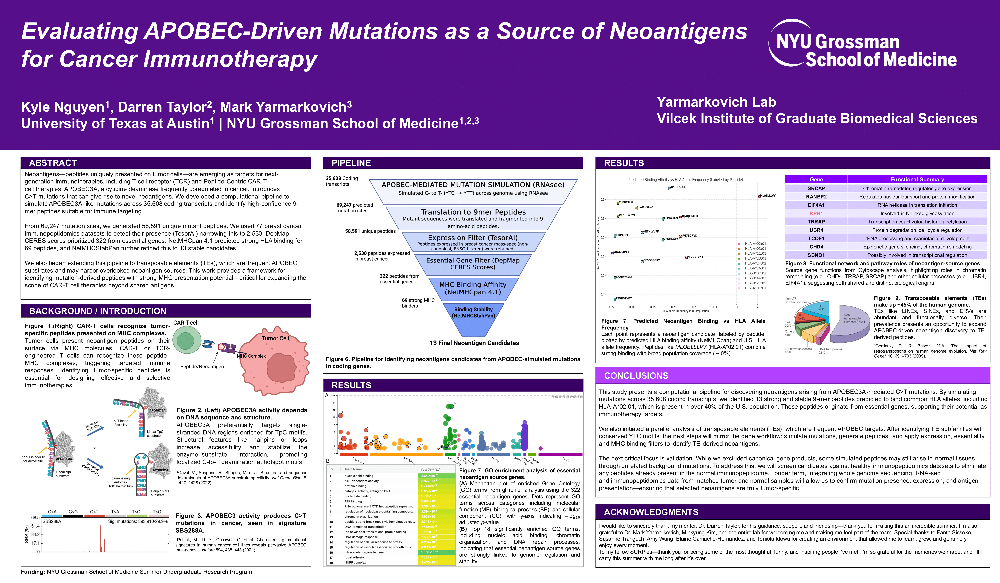

Computational Pipeline for Cancer Neoantigen Discovery
NYU Grossman School of Medicine (2025)
During my summer at NYU Grossman, I worked on a computational pipeline focused on identifying cancer-relevant neoantigen candidates from mutation-driven peptide changes. My work emphasized building reproducible data processing steps, generating peptide libraries, and preparing outputs for downstream immunology-focused filtering and prioritization.
Poster
Abstract
Neoantigens—peptides uniquely presented on tumor cells—are emerging as targets for next-generation immunotherapies, including T-cell receptor (TCR) and Peptide-Centric CAR-T cell therapies. APOBEC3A, a cytidine deaminase frequently upregulated in cancer, introduces C>T mutations that can give rise to novel neoantigens. We developed a computational pipeline to simulate APOBEC3A-like mutations across 35,608 coding transcripts and identify high-confidence 9-mer peptides suitable for immune targeting.
From 69,247 mutation sites, we generated 58,591 unique mutant peptides. We used 77 breast cancer immunopeptidomics datasets to detect their presence (TesorAI) narrowing this to 2,530; DepMap CERES scores prioritized 322 from essential genes. NetMHCpan 4.1 predicted strong HLA binding for 69 peptides, and NetMHCStabPan further refined this to 13 stable candidates.
We also began extending this pipeline to transposable elements (TEs), which are frequent APOBEC substrates and may harbor overlooked neoantigen sources. This work provides a framework for identifying mutation-derived peptides with strong MHC presentation potential—critical for expanding the scope of CAR-T cell therapies beyond shared antigens.
Tools & Methods
- APOBEC-style mutation simulation across coding transcripts
- Mutant 9-mer peptide generation and library construction
- Immunopeptidomics detection using TesorAI
- Gene essentiality prioritization using DepMap CERES
- HLA binding prediction using NetMHCpan 4.1
- Peptide stability filtering using NetMHCStabPan
- Early extension to transposable elements (TEs)
Contact
If you have questions about this project, feel free to reach out to me here: Kyle.Kylenguyen@nyulangone.org.